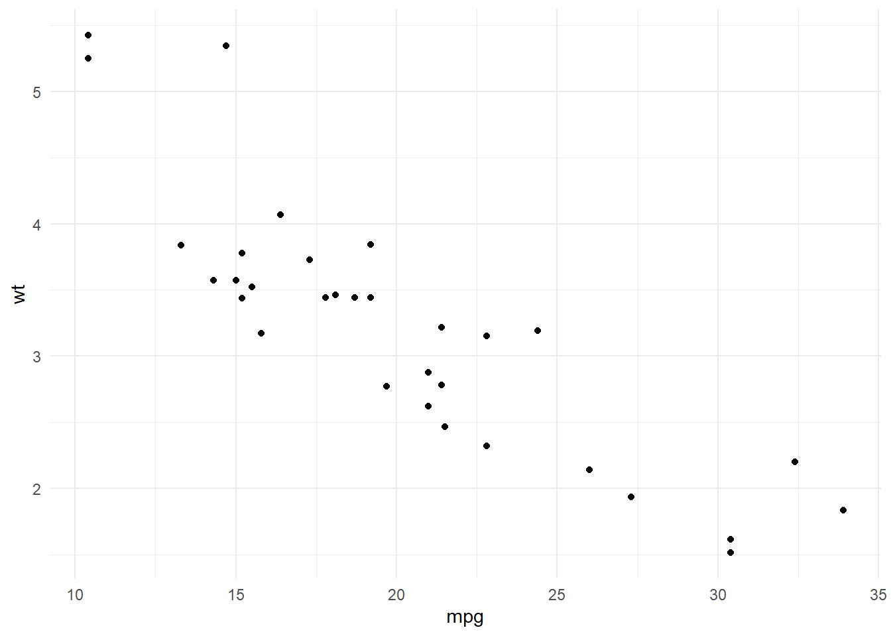

6 broom and dplyr
While broom is useful for summarizing the result of a single analysis in a consistent format, it is really designed for high-throughput applications, where you must combine results from multiple analyses. These could be subgroups of data, analyses using different models, bootstrap replicates, permutations, and so on. In particular, it plays well with the nest/unnest functions in tidyr and the map function in purrr. First, loading necessary packages and setting some defaults:
#ls("package:tidyr")
library(broom)
library(tibble)
library(ggplot2)
library(dplyr)
library(tidyr)
library(purrr)
theme_set(theme_minimal())Let’s try this on a simple dataset, the built-in Orange. We start by coercing Orange to a tibble. This gives a nicer print method that will especially useful later on when we start working with list-columns.
data(Orange)
Orange <- as_tibble(Orange)
Orange## # A tibble: 35 × 3
## Tree age circumference
## <ord> <dbl> <dbl>
## 1 1 118 30
## 2 1 484 58
## 3 1 664 87
## 4 1 1004 115
## 5 1 1231 120
## 6 1 1372 142
## 7 1 1582 145
## 8 2 118 33
## 9 2 484 69
## 10 2 664 111
## # … with 25 more rowsThis contains 35 observations of three variables: Tree, age, and circumference. Tree is a factor with five levels describing five trees. As might be expected, age and circumference are correlated:
cor(Orange$age, Orange$circumference)## [1] 0.9135189ggplot(Orange, aes(age, circumference, color = Tree)) +
geom_line()Suppose you want to test for correlations individually within each tree. You can do this with dplyr’s group_by:
Orange %>%
group_by(Tree) %>%
summarize(correlation = cor(age, circumference))## # A tibble: 5 × 2
## Tree correlation
## <ord> <dbl>
## 1 3 0.988
## 2 1 0.985
## 3 5 0.988
## 4 2 0.987
## 5 4 0.984(Note that the correlations are much higher than the aggregated one, and furthermore we can now see it is similar across trees).
Suppose that instead of simply estimating a correlation, we want to perform a hypothesis test with cor.test:
ct <- cor.test(Orange$age, Orange$circumference)
ct##
## Pearson's product-moment correlation
##
## data: Orange$age and Orange$circumference
## t = 12.9, df = 33, p-value = 1.931e-14
## alternative hypothesis: true correlation is not equal to 0
## 95 percent confidence interval:
## 0.8342364 0.9557955
## sample estimates:
## cor
## 0.9135189This contains multiple values we could want in our output. Some are vectors of length 1, such as the p-value and the estimate, and some are longer, such as the confidence interval. We can get this into a nicely organized tibble using the tidy function:
tidy(ct)## # A tibble: 1 × 8
## estimate statistic p.value parameter conf.low conf.high method alter…¹
## <dbl> <dbl> <dbl> <int> <dbl> <dbl> <chr> <chr>
## 1 0.914 12.9 1.93e-14 33 0.834 0.956 Pearson's pr… two.si…
## # … with abbreviated variable name ¹alternativeOften, we want to perform multiple tests or fit multiple models, each on a different part of the data. In this case, we recommend a nest-map-unnest workflow. For example, suppose we want to perform correlation tests for each different tree. We start by nesting our data based on the group of interest:
nested <- Orange %>%
nest(data = -Tree)Then we run a correlation test for each nested tibble using purrr::map:
nested %>%
mutate(test = map(data, ~ cor.test(.x$age, .x$circumference)))## # A tibble: 5 × 3
## Tree data test
## <ord> <list> <list>
## 1 1 <tibble [7 × 2]> <htest>
## 2 2 <tibble [7 × 2]> <htest>
## 3 3 <tibble [7 × 2]> <htest>
## 4 4 <tibble [7 × 2]> <htest>
## 5 5 <tibble [7 × 2]> <htest>This results in a list-column of S3 objects. We want to tidy each of the objects, which we can also do with map.
nested %>%
mutate(
test = map(data, ~ cor.test(.x$age, .x$circumference)), # S3 list-col
tidied = map(test, tidy)
)## # A tibble: 5 × 4
## Tree data test tidied
## <ord> <list> <list> <list>
## 1 1 <tibble [7 × 2]> <htest> <tibble [1 × 8]>
## 2 2 <tibble [7 × 2]> <htest> <tibble [1 × 8]>
## 3 3 <tibble [7 × 2]> <htest> <tibble [1 × 8]>
## 4 4 <tibble [7 × 2]> <htest> <tibble [1 × 8]>
## 5 5 <tibble [7 × 2]> <htest> <tibble [1 × 8]>Finally, we want to unnest the tidied data frames so we can see the results in a flat tibble. All together, this looks like:
Orange %>%
nest(data = -Tree) %>%
mutate(
test = map(data, ~ cor.test(.x$age, .x$circumference)), # S3 list-col
tidied = map(test, tidy)
) %>%
unnest(tidied)## # A tibble: 5 × 11
## Tree data test estimate stati…¹ p.value param…² conf.…³ conf.…⁴ method
## <ord> <list> <list> <dbl> <dbl> <dbl> <int> <dbl> <dbl> <chr>
## 1 1 <tibble> <htest> 0.985 13.0 4.85e-5 5 0.901 0.998 Pears…
## 2 2 <tibble> <htest> 0.987 13.9 3.43e-5 5 0.914 0.998 Pears…
## 3 3 <tibble> <htest> 0.988 14.4 2.90e-5 5 0.919 0.998 Pears…
## 4 4 <tibble> <htest> 0.984 12.5 5.73e-5 5 0.895 0.998 Pears…
## 5 5 <tibble> <htest> 0.988 14.1 3.18e-5 5 0.916 0.998 Pears…
## # … with 1 more variable: alternative <chr>, and abbreviated variable names
## # ¹statistic, ²parameter, ³conf.low, ⁴conf.highThis workflow becomes even more useful when applied to regressions. Untidy output for a regression looks like:
lm_fit <- lm(age ~ circumference, data = Orange)
summary(lm_fit)##
## Call:
## lm(formula = age ~ circumference, data = Orange)
##
## Residuals:
## Min 1Q Median 3Q Max
## -317.88 -140.90 -17.20 96.54 471.16
##
## Coefficients:
## Estimate Std. Error t value Pr(>|t|)
## (Intercept) 16.6036 78.1406 0.212 0.833
## circumference 7.8160 0.6059 12.900 1.93e-14 ***
## ---
## Signif. codes: 0 '***' 0.001 '**' 0.01 '*' 0.05 '.' 0.1 ' ' 1
##
## Residual standard error: 203.1 on 33 degrees of freedom
## Multiple R-squared: 0.8345, Adjusted R-squared: 0.8295
## F-statistic: 166.4 on 1 and 33 DF, p-value: 1.931e-14where we tidy these results, we get multiple rows of output for each model:
tidy(lm_fit)## # A tibble: 2 × 5
## term estimate std.error statistic p.value
## <chr> <dbl> <dbl> <dbl> <dbl>
## 1 (Intercept) 16.6 78.1 0.212 8.33e- 1
## 2 circumference 7.82 0.606 12.9 1.93e-14Now we can handle multiple regressions at once using exactly the same workflow as before:
Orange %>%
nest(data = -Tree) %>%
mutate(
fit = map(data, ~ lm(age ~ circumference, data = .x)),
tidied = map(fit, tidy)
) %>%
unnest(tidied)## # A tibble: 10 × 8
## Tree data fit term estimate std.er…¹ stati…² p.value
## <ord> <list> <list> <chr> <dbl> <dbl> <dbl> <dbl>
## 1 1 <tibble [7 × 2]> <lm> (Intercept) -265. 98.6 -2.68 4.36e-2
## 2 1 <tibble [7 × 2]> <lm> circumference 11.9 0.919 13.0 4.85e-5
## 3 2 <tibble [7 × 2]> <lm> (Intercept) -132. 83.1 -1.59 1.72e-1
## 4 2 <tibble [7 × 2]> <lm> circumference 7.80 0.560 13.9 3.43e-5
## 5 3 <tibble [7 × 2]> <lm> (Intercept) -210. 85.3 -2.46 5.74e-2
## 6 3 <tibble [7 × 2]> <lm> circumference 12.0 0.835 14.4 2.90e-5
## 7 4 <tibble [7 × 2]> <lm> (Intercept) -76.5 88.3 -0.867 4.26e-1
## 8 4 <tibble [7 × 2]> <lm> circumference 7.17 0.572 12.5 5.73e-5
## 9 5 <tibble [7 × 2]> <lm> (Intercept) -54.5 76.9 -0.709 5.10e-1
## 10 5 <tibble [7 × 2]> <lm> circumference 8.79 0.621 14.1 3.18e-5
## # … with abbreviated variable names ¹std.error, ²statisticYou can just as easily use multiple predictors in the regressions, as shown here on the mtcars dataset. We nest the data into automatic and manual cars (the am column), then perform the regression within each nested tibble.
data(mtcars)
mtcars <- as_tibble(mtcars) # to play nicely with list-cols
mtcars## # A tibble: 32 × 11
## mpg cyl disp hp drat wt qsec vs am gear carb
## <dbl> <dbl> <dbl> <dbl> <dbl> <dbl> <dbl> <dbl> <dbl> <dbl> <dbl>
## 1 21 6 160 110 3.9 2.62 16.5 0 1 4 4
## 2 21 6 160 110 3.9 2.88 17.0 0 1 4 4
## 3 22.8 4 108 93 3.85 2.32 18.6 1 1 4 1
## 4 21.4 6 258 110 3.08 3.22 19.4 1 0 3 1
## 5 18.7 8 360 175 3.15 3.44 17.0 0 0 3 2
## 6 18.1 6 225 105 2.76 3.46 20.2 1 0 3 1
## 7 14.3 8 360 245 3.21 3.57 15.8 0 0 3 4
## 8 24.4 4 147. 62 3.69 3.19 20 1 0 4 2
## 9 22.8 4 141. 95 3.92 3.15 22.9 1 0 4 2
## 10 19.2 6 168. 123 3.92 3.44 18.3 1 0 4 4
## # … with 22 more rowsmtcars %>%
nest(data = -am) %>%
mutate(
fit = map(data, ~ lm(wt ~ mpg + qsec + gear, data = .x)), # S3 list-col
tidied = map(fit, tidy)
) %>%
unnest(tidied)## # A tibble: 8 × 8
## am data fit term estimate std.error stati…¹ p.value
## <dbl> <list> <list> <chr> <dbl> <dbl> <dbl> <dbl>
## 1 1 <tibble [13 × 10]> <lm> (Intercept) 4.28 3.46 1.24 2.47e-1
## 2 1 <tibble [13 × 10]> <lm> mpg -0.101 0.0294 -3.43 7.50e-3
## 3 1 <tibble [13 × 10]> <lm> qsec 0.0398 0.151 0.264 7.98e-1
## 4 1 <tibble [13 × 10]> <lm> gear -0.0229 0.349 -0.0656 9.49e-1
## 5 0 <tibble [19 × 10]> <lm> (Intercept) 4.92 1.40 3.52 3.09e-3
## 6 0 <tibble [19 × 10]> <lm> mpg -0.192 0.0443 -4.33 5.91e-4
## 7 0 <tibble [19 × 10]> <lm> qsec 0.0919 0.0983 0.935 3.65e-1
## 8 0 <tibble [19 × 10]> <lm> gear 0.147 0.368 0.398 6.96e-1
## # … with abbreviated variable name ¹statisticWhat if you want not just the tidy output, but the augment and glance outputs as well, while still performing each regression only once? Since we’re using list-columns, we can just fit the model once and use multiple list-columns to store the tidied, glanced and augmented outputs.
regressions <- mtcars %>%
nest(data = -am) %>%
mutate(
fit = map(data, ~ lm(wt ~ mpg + qsec + gear, data = .x)),
tidied = map(fit, tidy),
glanced = map(fit, glance),
augmented = map(fit, augment)
)
regressions %>%
unnest(tidied)## # A tibble: 8 × 10
## am data fit term estim…¹ std.e…² stati…³ p.value glanced augmen…⁴
## <dbl> <list> <list> <chr> <dbl> <dbl> <dbl> <dbl> <list> <list>
## 1 1 <tibble> <lm> (Inte… 4.28 3.46 1.24 2.47e-1 <tibble> <tibble>
## 2 1 <tibble> <lm> mpg -0.101 0.0294 -3.43 7.50e-3 <tibble> <tibble>
## 3 1 <tibble> <lm> qsec 0.0398 0.151 0.264 7.98e-1 <tibble> <tibble>
## 4 1 <tibble> <lm> gear -0.0229 0.349 -0.0656 9.49e-1 <tibble> <tibble>
## 5 0 <tibble> <lm> (Inte… 4.92 1.40 3.52 3.09e-3 <tibble> <tibble>
## 6 0 <tibble> <lm> mpg -0.192 0.0443 -4.33 5.91e-4 <tibble> <tibble>
## 7 0 <tibble> <lm> qsec 0.0919 0.0983 0.935 3.65e-1 <tibble> <tibble>
## 8 0 <tibble> <lm> gear 0.147 0.368 0.398 6.96e-1 <tibble> <tibble>
## # … with abbreviated variable names ¹estimate, ²std.error, ³statistic,
## # ⁴augmentedregressions %>%
unnest(glanced)## # A tibble: 2 × 17
## am data fit tidied r.squared adj.r.s…¹ sigma stati…² p.value df
## <dbl> <list> <list> <list> <dbl> <dbl> <dbl> <dbl> <dbl> <dbl>
## 1 1 <tibble> <lm> <tibble> 0.833 0.778 0.291 15.0 7.59e-4 3
## 2 0 <tibble> <lm> <tibble> 0.625 0.550 0.522 8.32 1.70e-3 3
## # … with 7 more variables: logLik <dbl>, AIC <dbl>, BIC <dbl>, deviance <dbl>,
## # df.residual <int>, nobs <int>, augmented <list>, and abbreviated variable
## # names ¹adj.r.squared, ²statisticregressions %>%
unnest(augmented)## # A tibble: 32 × 15
## am data fit tidied glanced wt mpg qsec gear .fitted
## <dbl> <list> <list> <list> <list> <dbl> <dbl> <dbl> <dbl> <dbl>
## 1 1 <tibble> <lm> <tibble> <tibble> 2.62 21 16.5 4 2.73
## 2 1 <tibble> <lm> <tibble> <tibble> 2.88 21 17.0 4 2.75
## 3 1 <tibble> <lm> <tibble> <tibble> 2.32 22.8 18.6 4 2.63
## 4 1 <tibble> <lm> <tibble> <tibble> 2.2 32.4 19.5 4 1.70
## 5 1 <tibble> <lm> <tibble> <tibble> 1.62 30.4 18.5 4 1.86
## 6 1 <tibble> <lm> <tibble> <tibble> 1.84 33.9 19.9 4 1.56
## 7 1 <tibble> <lm> <tibble> <tibble> 1.94 27.3 18.9 4 2.19
## 8 1 <tibble> <lm> <tibble> <tibble> 2.14 26 16.7 5 2.21
## 9 1 <tibble> <lm> <tibble> <tibble> 1.51 30.4 16.9 5 1.77
## 10 1 <tibble> <lm> <tibble> <tibble> 3.17 15.8 14.5 5 3.15
## # … with 22 more rows, and 5 more variables: .resid <dbl>, .hat <dbl>,
## # .sigma <dbl>, .cooksd <dbl>, .std.resid <dbl>By combining the estimates and p-values across all groups into the same tidy data frame (instead of a list of output model objects), a new class of analyses and visualizations becomes straightforward. This includes
- Sorting by p-value or estimate to find the most significant terms across all tests
- P-value histograms
- Volcano plots comparing p-values to effect size estimates
In each of these cases, we can easily filter, facet, or distinguish based on the term column. In short, this makes the tools of tidy data analysis available for the results of data analysis and models, not just the inputs.
6.1 Tidy bootstrapping
Another place where combining model fits in a tidy way becomes useful is when performing bootstrapping or permutation tests. These approaches have been explored before, for instance by Andrew MacDonald here, and Hadley has explored efficient support for bootstrapping as a potential enhancement to dplyr. broom fits naturally with dplyr in performing these analyses.
Bootstrapping consists of randomly sampling a dataset with replacement, then performing the analysis individually on each bootstrapped replicate. The variation in the resulting estimate is then a reasonable approximation of the variance in our estimate.
Let’s say we want to fit a nonlinear model to the weight/mileage relationship in the mtcars dataset.
library(ggplot2)
theme_set(theme_minimal())
ggplot(mtcars, aes(mpg, wt)) +
geom_point()
We might use the method of nonlinear least squares (via the nls function) to fit a model.
nlsfit <- nls(mpg ~ k / wt + b, mtcars, start = list(k = 1, b = 0))
summary(nlsfit)##
## Formula: mpg ~ k/wt + b
##
## Parameters:
## Estimate Std. Error t value Pr(>|t|)
## k 45.829 4.249 10.786 7.64e-12 ***
## b 4.386 1.536 2.855 0.00774 **
## ---
## Signif. codes: 0 '***' 0.001 '**' 0.01 '*' 0.05 '.' 0.1 ' ' 1
##
## Residual standard error: 2.774 on 30 degrees of freedom
##
## Number of iterations to convergence: 1
## Achieved convergence tolerance: 2.877e-08ggplot(mtcars, aes(wt, mpg)) +
geom_point() +
geom_line(aes(y = predict(nlsfit)))While this does provide a p-value and confidence intervals for the parameters, these are based on model assumptions that may not hold in real data. Bootstrapping is a popular method for providing confidence intervals and predictions that are more robust to the nature of the data.
We can use the bootstraps function in the rsample package to sample bootstrap replications. First, we construct 100 bootstrap replications of the data, each of which has been randomly sampled with replacement. The resulting object is an rset, which is a dataframe with a column of rsplit objects.
An rsplit object has two main components: an analysis dataset and an assessment dataset, accessible via analysis(rsplit) and assessment(rsplit) respectively. For bootstrap samples, the analysis dataset is the bootstrap sample itself, and the assessment dataset consists of all the out of bag samples.
library(dplyr)
library(rsample)
library(broom)
library(purrr)
library(tidyr)
set.seed(27)
boots <- bootstraps(mtcars, times = 100)
boots## # Bootstrap sampling
## # A tibble: 100 × 2
## splits id
## <list> <chr>
## 1 <split [32/13]> Bootstrap001
## 2 <split [32/10]> Bootstrap002
## 3 <split [32/13]> Bootstrap003
## 4 <split [32/11]> Bootstrap004
## 5 <split [32/9]> Bootstrap005
## 6 <split [32/10]> Bootstrap006
## 7 <split [32/11]> Bootstrap007
## 8 <split [32/13]> Bootstrap008
## 9 <split [32/11]> Bootstrap009
## 10 <split [32/11]> Bootstrap010
## # … with 90 more rowsWe create a helper function to fit an nls model on each bootstrap sample, and then use purrr::map to apply this function to all the bootstrap samples at once. Similarly, we create a column of tidy coefficient information by unnesting.
fit_nls_on_bootstrap <- function(split) {
nls(mpg ~ k / wt + b, analysis(split), start = list(k = 1, b = 0))
}
boot_models <- boots %>%
mutate(model = map(splits, fit_nls_on_bootstrap),
coef_info = map(model, tidy))
boot_models## # Bootstrap sampling
## # A tibble: 100 × 4
## splits id model coef_info
## <list> <chr> <list> <list>
## 1 <split [32/13]> Bootstrap001 <nls> <tibble [2 × 5]>
## 2 <split [32/10]> Bootstrap002 <nls> <tibble [2 × 5]>
## 3 <split [32/13]> Bootstrap003 <nls> <tibble [2 × 5]>
## 4 <split [32/11]> Bootstrap004 <nls> <tibble [2 × 5]>
## 5 <split [32/9]> Bootstrap005 <nls> <tibble [2 × 5]>
## 6 <split [32/10]> Bootstrap006 <nls> <tibble [2 × 5]>
## 7 <split [32/11]> Bootstrap007 <nls> <tibble [2 × 5]>
## 8 <split [32/13]> Bootstrap008 <nls> <tibble [2 × 5]>
## 9 <split [32/11]> Bootstrap009 <nls> <tibble [2 × 5]>
## 10 <split [32/11]> Bootstrap010 <nls> <tibble [2 × 5]>
## # … with 90 more rowsboot_coefs <- boot_models %>%
unnest(coef_info)The unnested coefficient information contains a summary of each replication combined in a single data frame:
boot_coefs## # A tibble: 200 × 8
## splits id model term estimate std.error stati…¹ p.value
## <list> <chr> <list> <chr> <dbl> <dbl> <dbl> <dbl>
## 1 <split [32/13]> Bootstrap001 <nls> k 42.1 4.05 10.4 1.91e-11
## 2 <split [32/13]> Bootstrap001 <nls> b 5.39 1.43 3.78 6.93e- 4
## 3 <split [32/10]> Bootstrap002 <nls> k 49.9 5.66 8.82 7.82e-10
## 4 <split [32/10]> Bootstrap002 <nls> b 3.73 1.92 1.94 6.13e- 2
## 5 <split [32/13]> Bootstrap003 <nls> k 37.8 2.68 14.1 9.01e-15
## 6 <split [32/13]> Bootstrap003 <nls> b 6.73 1.17 5.75 2.78e- 6
## 7 <split [32/11]> Bootstrap004 <nls> k 45.6 4.45 10.2 2.70e-11
## 8 <split [32/11]> Bootstrap004 <nls> b 4.75 1.62 2.93 6.38e- 3
## 9 <split [32/9]> Bootstrap005 <nls> k 43.6 4.63 9.41 1.85e-10
## 10 <split [32/9]> Bootstrap005 <nls> b 5.89 1.68 3.51 1.44e- 3
## # … with 190 more rows, and abbreviated variable name ¹statisticWe can then calculate confidence intervals (using what is called the percentile method):
alpha <- .05
boot_coefs %>%
group_by(term) %>%
summarize(low = quantile(estimate, alpha / 2),
high = quantile(estimate, 1 - alpha / 2))## # A tibble: 2 × 3
## term low high
## <chr> <dbl> <dbl>
## 1 b 0.283 6.74
## 2 k 38.5 57.6Or we can use histograms to get a more detailed idea of the uncertainty in each estimate:
ggplot(boot_coefs, aes(estimate)) +
geom_histogram(binwidth = 2) +
facet_wrap(~ term, scales = "free")Or we can use augment to visualize the uncertainty in the curve:
boot_aug <- boot_models %>%
mutate(augmented = map(model, augment)) %>%
unnest(augmented)
boot_aug## # A tibble: 3,200 × 8
## splits id model coef_info mpg wt .fitted .resid
## <list> <chr> <list> <list> <dbl> <dbl> <dbl> <dbl>
## 1 <split [32/13]> Bootstrap001 <nls> <tibble> 18.7 3.44 17.6 1.08
## 2 <split [32/13]> Bootstrap001 <nls> <tibble> 32.4 2.2 24.5 7.89
## 3 <split [32/13]> Bootstrap001 <nls> <tibble> 15.5 3.52 17.3 -1.84
## 4 <split [32/13]> Bootstrap001 <nls> <tibble> 22.8 3.15 18.7 4.05
## 5 <split [32/13]> Bootstrap001 <nls> <tibble> 24.4 3.19 18.6 5.82
## 6 <split [32/13]> Bootstrap001 <nls> <tibble> 30.4 1.62 31.4 -1.04
## 7 <split [32/13]> Bootstrap001 <nls> <tibble> 10.4 5.42 13.1 -2.75
## 8 <split [32/13]> Bootstrap001 <nls> <tibble> 21 2.62 21.4 -0.448
## 9 <split [32/13]> Bootstrap001 <nls> <tibble> 19.2 3.84 16.3 2.87
## 10 <split [32/13]> Bootstrap001 <nls> <tibble> 21 2.62 21.4 -0.448
## # … with 3,190 more rowsggplot(boot_aug, aes(wt, mpg)) +
geom_point() +
geom_line(aes(y = .fitted, group = id), alpha=.2)With only a few small changes, we could easily perform bootstrapping with other kinds of predictive or hypothesis testing models, since the tidy and augment functions works for many statistical outputs. As another example, we could use smooth.spline, which fits a cubic smoothing spline to data:
fit_spline_on_bootstrap <- function(split) {
data <- analysis(split)
smooth.spline(data$wt, data$mpg, df = 4)
}
boot_splines <- boots %>%
mutate(spline = map(splits, fit_spline_on_bootstrap),
aug_train = map(spline, augment))
splines_aug <- boot_splines %>%
unnest(aug_train)
ggplot(splines_aug, aes(x, y)) +
geom_point() +
geom_line(aes(y = .fitted, group = id), alpha = 0.2)6.2 Mais detalhes (glance)
6.2.1 lm()
fit <- lm(Volume ~ Girth + Height, trees)
tidy(fit)## # A tibble: 3 × 5
## term estimate std.error statistic p.value
## <chr> <dbl> <dbl> <dbl> <dbl>
## 1 (Intercept) -58.0 8.64 -6.71 2.75e- 7
## 2 Girth 4.71 0.264 17.8 8.22e-17
## 3 Height 0.339 0.130 2.61 1.45e- 2glance(fit)## # A tibble: 1 × 12
## r.squared adj.r.squa…¹ sigma stati…² p.value df logLik AIC BIC devia…³
## <dbl> <dbl> <dbl> <dbl> <dbl> <dbl> <dbl> <dbl> <dbl> <dbl>
## 1 0.948 0.944 3.88 255. 1.07e-18 2 -84.5 177. 183. 422.
## # … with 2 more variables: df.residual <int>, nobs <int>, and abbreviated
## # variable names ¹adj.r.squared, ²statistic, ³devianceaugment(fit, data = trees)## # A tibble: 31 × 9
## Girth Height Volume .fitted .resid .hat .sigma .cooksd .std.resid
## <dbl> <dbl> <dbl> <dbl> <dbl> <dbl> <dbl> <dbl> <dbl>
## 1 8.3 70 10.3 4.84 5.46 0.116 3.79 0.0978 1.50
## 2 8.6 65 10.3 4.55 5.75 0.147 3.77 0.148 1.60
## 3 8.8 63 10.2 4.82 5.38 0.177 3.78 0.167 1.53
## 4 10.5 72 16.4 15.9 0.526 0.0592 3.95 0.000409 0.140
## 5 10.7 81 18.8 19.9 -1.07 0.121 3.95 0.00394 -0.294
## 6 10.8 83 19.7 21.0 -1.32 0.156 3.94 0.00840 -0.370
## 7 11 66 15.6 16.2 -0.593 0.115 3.95 0.00114 -0.162
## 8 11 75 18.2 19.2 -1.05 0.0515 3.95 0.00138 -0.277
## 9 11.1 80 22.6 21.4 1.19 0.0920 3.95 0.00348 0.321
## 10 11.2 75 19.9 20.2 -0.288 0.0480 3.95 0.0000968 -0.0759
## # … with 21 more rowsmethods("tidy")## [1] tidy.aareg* tidy.acf*
## [3] tidy.anova* tidy.aov*
## [5] tidy.aovlist* tidy.Arima*
## [7] tidy.betamfx* tidy.betareg*
## [9] tidy.biglm* tidy.binDesign*
## [11] tidy.binWidth* tidy.boot*
## [13] tidy.btergm* tidy.cch*
## [15] tidy.character* tidy.cld*
## [17] tidy.clm* tidy.clmm*
## [19] tidy.coeftest* tidy.confint.glht*
## [21] tidy.confusionMatrix* tidy.coxph*
## [23] tidy.crr* tidy.cv.glmnet*
## [25] tidy.data.frame* tidy.default*
## [27] tidy.density* tidy.dist*
## [29] tidy.drc* tidy.durbinWatsonTest*
## [31] tidy.emmGrid* tidy.epi.2by2*
## [33] tidy.ergm* tidy.factanal*
## [35] tidy.felm* tidy.fitdistr*
## [37] tidy.fixest* tidy.ftable*
## [39] tidy.gam* tidy.Gam*
## [41] tidy.garch* tidy.geeglm*
## [43] tidy.glht* tidy.glm*
## [45] tidy.glmnet* tidy.glmrob*
## [47] tidy.glmRob* tidy.gmm*
## [49] tidy.htest* tidy.ivreg*
## [51] tidy.kappa* tidy.kde*
## [53] tidy.Kendall* tidy.kmeans*
## [55] tidy.lavaan* tidy.leveneTest*
## [57] tidy.Line* tidy.Lines*
## [59] tidy.list* tidy.lm*
## [61] tidy.lm.beta* tidy.lmodel2*
## [63] tidy.lmrob* tidy.lmRob*
## [65] tidy.logical* tidy.logitmfx*
## [67] tidy.lsmobj* tidy.manova*
## [69] tidy.map* tidy.margins*
## [71] tidy.Mclust* tidy.mediate*
## [73] tidy.mfx* tidy.mjoint*
## [75] tidy.mle2* tidy.mlm*
## [77] tidy.mlogit* tidy.muhaz*
## [79] tidy.multinom* tidy.negbin*
## [81] tidy.negbinmfx* tidy.nested_cv*
## [83] tidy.nlrq* tidy.nls*
## [85] tidy.NULL* tidy.numeric*
## [87] tidy.orcutt* tidy.pairwise.htest*
## [89] tidy.pam* tidy.plm*
## [91] tidy.poissonmfx* tidy.poLCA*
## [93] tidy.polr* tidy.Polygon*
## [95] tidy.Polygons* tidy.power.htest*
## [97] tidy.prcomp* tidy.probitmfx*
## [99] tidy.pyears* tidy.rcorr*
## [101] tidy.ref.grid* tidy.regsubsets*
## [103] tidy.ridgelm* tidy.rlm*
## [105] tidy.rma* tidy.roc*
## [107] tidy.rq* tidy.rqs*
## [109] tidy.rset* tidy.rsplit*
## [111] tidy.sarlm* tidy.Sarlm*
## [113] tidy.SpatialLinesDataFrame* tidy.SpatialPolygons*
## [115] tidy.SpatialPolygonsDataFrame* tidy.spec*
## [117] tidy.speedglm* tidy.speedlm*
## [119] tidy.summary.glht* tidy.summary.lm*
## [121] tidy.summary.plm* tidy.summary_emm*
## [123] tidy.summaryDefault* tidy.survdiff*
## [125] tidy.survexp* tidy.survfit*
## [127] tidy.survreg* tidy.svyglm*
## [129] tidy.svyolr* tidy.systemfit*
## [131] tidy.table* tidy.tobit*
## [133] tidy.ts* tidy.TukeyHSD*
## [135] tidy.varest* tidy.vfold_cv*
## [137] tidy.zoo*
## see '?methods' for accessing help and source codemethods("glance")## [1] glance.aareg* glance.anova* glance.aov*
## [4] glance.Arima* glance.betamfx* glance.betareg*
## [7] glance.biglm* glance.binDesign* glance.cch*
## [10] glance.clm* glance.clmm* glance.coeftest*
## [13] glance.coxph* glance.crr* glance.cv.glmnet*
## [16] glance.data.frame* glance.default* glance.drc*
## [19] glance.durbinWatsonTest* glance.ergm* glance.factanal*
## [22] glance.felm* glance.fitdistr* glance.fixest*
## [25] glance.gam* glance.Gam* glance.garch*
## [28] glance.geeglm* glance.glm* glance.glmnet*
## [31] glance.glmRob* glance.gmm* glance.htest*
## [34] glance.ivreg* glance.kmeans* glance.lavaan*
## [37] glance.list* glance.lm* glance.lmodel2*
## [40] glance.lmrob* glance.lmRob* glance.logitmfx*
## [43] glance.margins* glance.Mclust* glance.mfx*
## [46] glance.mjoint* glance.mlogit* glance.muhaz*
## [49] glance.multinom* glance.negbin* glance.negbinmfx*
## [52] glance.nlrq* glance.nls* glance.NULL*
## [55] glance.orcutt* glance.pam* glance.plm*
## [58] glance.poissonmfx* glance.poLCA* glance.polr*
## [61] glance.probitmfx* glance.pyears* glance.ridgelm*
## [64] glance.rlm* glance.rma* glance.rq*
## [67] glance.rqs* glance.sarlm* glance.Sarlm*
## [70] glance.smooth.spline* glance.speedglm* glance.speedlm*
## [73] glance.summary.lm* glance.summaryDefault* glance.survdiff*
## [76] glance.survexp* glance.survfit* glance.survreg*
## [79] glance.svyglm* glance.svyolr* glance.tbl_df*
## [82] glance.varest*
## see '?methods' for accessing help and source codemethods("augment")## [1] augment.betamfx* augment.betareg* augment.clm*
## [4] augment.coxph* augment.data.frame* augment.decomposed.ts*
## [7] augment.default* augment.drc* augment.factanal*
## [10] augment.felm* augment.fixest* augment.gam*
## [13] augment.glm* augment.glmrob* augment.glmRob*
## [16] augment.htest* augment.ivreg* augment.kmeans*
## [19] augment.lm* augment.lmrob* augment.lmRob*
## [22] augment.loess* augment.logitmfx* augment.margins*
## [25] augment.Mclust* augment.mfx* augment.mjoint*
## [28] augment.mlogit* augment.negbinmfx* augment.nlrq*
## [31] augment.nls* augment.NULL* augment.pam*
## [34] augment.plm* augment.poissonmfx* augment.poLCA*
## [37] augment.polr* augment.prcomp* augment.probitmfx*
## [40] augment.rlm* augment.rma* augment.rq*
## [43] augment.rqs* augment.sarlm* augment.Sarlm*
## [46] augment.smooth.spline* augment.speedglm* augment.speedlm*
## [49] augment.stl* augment.survreg*
## see '?methods' for accessing help and source code#tirei da ajuda do R!
# fit models
a <- lm(mpg ~ wt + qsec + disp, mtcars)
b <- lm(mpg ~ wt + qsec, mtcars)
mod <- anova(a, b)
# summarize model fit with tidiers
tidy(mod)## # A tibble: 2 × 7
## term df.residual rss df sumsq statistic p.value
## <chr> <dbl> <dbl> <dbl> <dbl> <dbl> <dbl>
## 1 mpg ~ wt + qsec + disp 28 195. NA NA NA NA
## 2 mpg ~ wt + qsec 29 195. -1 -0.00102 0.000147 0.990glance(mod)## # A tibble: 1 × 2
## deviance df.residual
## <dbl> <dbl>
## 1 195. 29# car::linearHypothesis() example
library(car)
mod_lht <- linearHypothesis(a, "wt - disp")
tidy(mod_lht)## # A tibble: 1 × 10
## term null.value estim…¹ std.e…² stati…³ p.value df.re…⁴ rss df sumsq
## <chr> <dbl> <dbl> <dbl> <dbl> <dbl> <dbl> <dbl> <dbl> <dbl>
## 1 wt - disp 0 -5.03 1.23 16.6 3.39e-4 28 195. 1 116.
## # … with abbreviated variable names ¹estimate, ²std.error, ³statistic,
## # ⁴df.residualglance(mod_lht)## # A tibble: 1 × 2
## deviance df.residual
## <dbl> <dbl>
## 1 195. 286.2.2 nls()
# fit model
nn <- nls(mpg ~ k * e^wt, data = mtcars, start = list(k = 1, e = 2))
# summarize model fit with tidiers + visualization
tidy(nn)## # A tibble: 2 × 5
## term estimate std.error statistic p.value
## <chr> <dbl> <dbl> <dbl> <dbl>
## 1 k 49.7 3.79 13.1 5.96e-14
## 2 e 0.746 0.0199 37.5 8.86e-27augment(nn)## # A tibble: 32 × 4
## mpg wt .fitted .resid
## <dbl> <dbl> <dbl> <dbl>
## 1 21 2.62 23.0 -2.01
## 2 21 2.88 21.4 -0.352
## 3 22.8 2.32 25.1 -2.33
## 4 21.4 3.22 19.3 2.08
## 5 18.7 3.44 18.1 0.611
## 6 18.1 3.46 18.0 0.117
## 7 14.3 3.57 17.4 -3.11
## 8 24.4 3.19 19.5 4.93
## 9 22.8 3.15 19.7 3.10
## 10 19.2 3.44 18.1 1.11
## # … with 22 more rowsglance(nn)## # A tibble: 1 × 9
## sigma isConv finTol logLik AIC BIC deviance df.residual nobs
## <dbl> <lgl> <dbl> <dbl> <dbl> <dbl> <dbl> <int> <int>
## 1 2.67 TRUE 0.00000204 -75.8 158. 162. 214. 30 32ggplot(augment(nn), aes(wt, mpg)) +
geom_point() +
geom_line(aes(y = .fitted))newdata <- head(mtcars)
newdata$wt <- newdata$wt + 1
augment(nn, newdata = newdata)## # A tibble: 6 × 12
## mpg cyl disp hp drat wt qsec vs am gear carb .fitted
## <dbl> <dbl> <dbl> <dbl> <dbl> <dbl> <dbl> <dbl> <dbl> <dbl> <dbl> <dbl>
## 1 21 6 160 110 3.9 3.62 16.5 0 1 4 4 17.2
## 2 21 6 160 110 3.9 3.88 17.0 0 1 4 4 15.9
## 3 22.8 4 108 93 3.85 3.32 18.6 1 1 4 1 18.7
## 4 21.4 6 258 110 3.08 4.22 19.4 1 0 3 1 14.4
## 5 18.7 8 360 175 3.15 4.44 17.0 0 0 3 2 13.5
## 6 18.1 6 225 105 2.76 4.46 20.2 1 0 3 1 13.46.2.3 glm()
g <- glm(am ~ mpg, mtcars, family = "binomial")
g##
## Call: glm(formula = am ~ mpg, family = "binomial", data = mtcars)
##
## Coefficients:
## (Intercept) mpg
## -6.604 0.307
##
## Degrees of Freedom: 31 Total (i.e. Null); 30 Residual
## Null Deviance: 43.23
## Residual Deviance: 29.68 AIC: 33.68glance(g)## # A tibble: 1 × 8
## null.deviance df.null logLik AIC BIC deviance df.residual nobs
## <dbl> <int> <dbl> <dbl> <dbl> <dbl> <int> <int>
## 1 43.2 31 -14.8 33.7 36.6 29.7 30 326.2.4 gam()
# load libraries for models and data
library(mgcv)
# fit model
g <- gam(mpg ~ s(hp) + am + qsec, data = mtcars)
g##
## Family: gaussian
## Link function: identity
##
## Formula:
## mpg ~ s(hp) + am + qsec
##
## Estimated degrees of freedom:
## 2.36 total = 5.36
##
## GCV score: 8.837538# summarize model fit with tidiers
tidy(g)## # A tibble: 1 × 5
## term edf ref.df statistic p.value
## <chr> <dbl> <dbl> <dbl> <dbl>
## 1 s(hp) 2.36 3.02 6.34 0.00218tidy(g, parametric = TRUE)## # A tibble: 3 × 5
## term estimate std.error statistic p.value
## <chr> <dbl> <dbl> <dbl> <dbl>
## 1 (Intercept) 16.7 9.83 1.70 0.101
## 2 am 4.37 1.56 2.81 0.00918
## 3 qsec 0.0904 0.525 0.172 0.865glance(g)## # A tibble: 1 × 7
## df logLik AIC BIC deviance df.residual nobs
## <dbl> <dbl> <dbl> <dbl> <dbl> <dbl> <int>
## 1 5.36 -74.4 162. 171. 196. 26.6 32augment(g)## # A tibble: 32 × 10
## mpg am qsec hp .fitted .se.fit .resid .hat .sigma .cooksd
## <dbl> <dbl> <dbl> <dbl> <dbl> <dbl> <dbl> <dbl> <lgl> <dbl>
## 1 21 1 16.5 110 24.3 1.03 -3.25 0.145 NA 0.0529
## 2 21 1 17.0 110 24.3 0.925 -3.30 0.116 NA 0.0411
## 3 22.8 1 18.6 93 26.0 0.894 -3.22 0.109 NA 0.0359
## 4 21.4 0 19.4 110 20.2 0.827 1.25 0.0930 NA 0.00448
## 5 18.7 0 17.0 175 15.7 0.815 3.02 0.0902 NA 0.0251
## 6 18.1 0 20.2 105 20.7 0.914 -2.56 0.113 NA 0.0240
## 7 14.3 0 15.8 245 12.7 1.11 1.63 0.167 NA 0.0162
## 8 24.4 0 20 62 25.0 1.45 -0.618 0.287 NA 0.00545
## 9 22.8 0 22.9 95 21.8 1.81 0.959 0.446 NA 0.0340
## 10 19.2 0 18.3 123 19.0 0.864 0.211 0.102 NA 0.000142
## # … with 22 more rows6.3 links
https://www.youtube.com/watch?v=1bnhT8tlCJQ&list=PLBnFxG6owe1F-3y0_aphRZ5YHH06Qr1Kj
https://bookdown.org/bruno_lucian_costa/CursoIntermediarioR/tidyr.html
https://bookdown.org/Maxine/r4ds/nesting.html
https://livro.curso-r.com/7-3-tidyr.html
http://leg.ufpr.br/~walmes/cursoR/data-vis/slides/04-tidyr.pdf
Ver como citar referências Wickham et al. (2019), Wickham (2023), Wickham, Vaughan, e Girlich (2023), Wickham, Chang, et al. (2023), Wickham e Henry (2023), Wickham, François, et al. (2023), Xie (2023b), Xie (2023a)